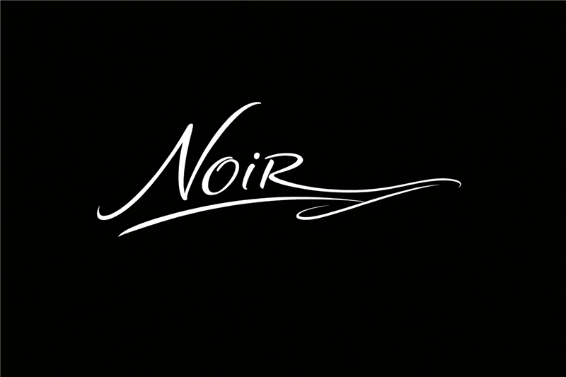

嵐
LAN搖滾 · Trap · 電音
頻道主力。搖滾抒情是本業：電吉他、爆發副歌，痛也唱得很有力氣；也能切進潮流 Trap、電音街舞，甚至用台語 Rap 講想念——「愛可以坍塌，但我不會倒下」。
三個剛出道的聲音，一個很吵的製作人。
我們寫那些說不出口的心事——分手、等待、放下，和放不下。
旗下三位虛擬歌手各有各的嗓音與脾氣：嵐的搖滾直球、安瑀的甜美抒情、諾雅的冷靜低語。不是大明星，是一路從零開始唱的小歌手。
同一個廠牌，三種完全不同的心碎方式。
頻道主力。搖滾抒情是本業：電吉他、爆發副歌，痛也唱得很有力氣；也能切進潮流 Trap、電音街舞，甚至用台語 Rap 講想念——「愛可以坍塌，但我不會倒下」。

鋼琴和弦樂鋪底的抒情慢歌，唱法不炫技、咬字真，把分手後的小細節唱得特別揪心——「我不恨你，只是心疼那個曾經的自己」。

偏低的成熟女聲，語速慢、情緒收著唱。都會抒情帶一點 R&B 氛圍，專唱等待、延遲、不對等的愛——「差一步，就成了我們的結局」。
製作人，也是三位歌手口中的「小老哥」。北爛愛玩、嘴砲第一名，常發起荒謬企劃；嘴上嫌東嫌西，飲料和器材倒是都默默扛了。偶爾也會下場合唱（例如嵐的〈束手無力〉）。
以華語抒情為核心，往搖滾、Trap、電音和台語延伸。人聲厚、情緒滿，不寫老梗。
頻道的根。鋼琴與弦樂鋪底，把分手後的細節唱到讓人停下來。
電吉他和爆發副歌，痛也要痛得很有力氣。
低頻 808 配上冷調旋律，態度比歌詞還直接。
男女對唱、街舞編排，傷心也可以跳。
用母語講最直白的想念，嵐的另一面。
新歌每週更新，幕後日常和三位歌手的互嗆在 IG、Threads、TikTok。